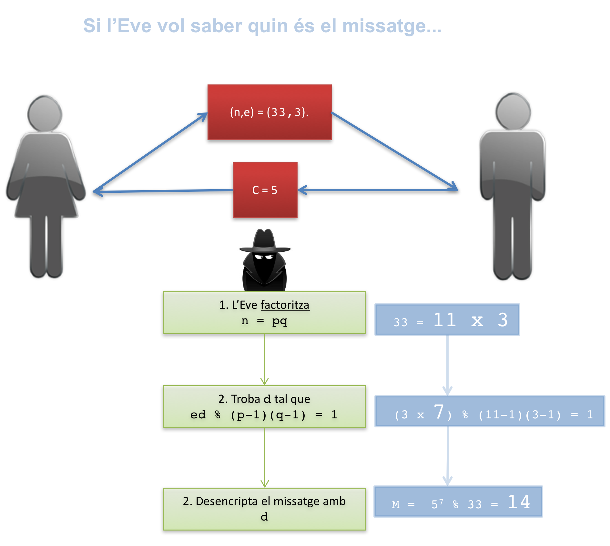
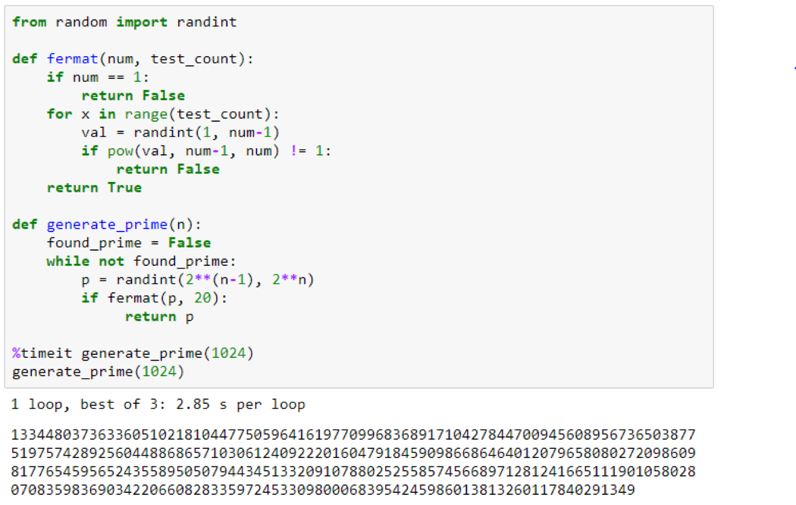

class: center, middle <center><img src="images/ub.png" width="150"></center> # **ALGORÍSMICA** ## Algorismes Numèrics II Jordi Vitrià, Mireia Ribera .blue[jordi.vitria@ub.edu] | .blue[ribera@ub.edu] --- class: center, middle, inverse name:modular ## Aritmètica Modular o com en `Bob` envia un missatge secret `M` a l‘`Alice` sense que l’`Eve` ho pugui llegir. --- ## Com enviar un missatge secret? L'artimètica modular és una part de les matemàtiques en ha resultat fonamental per una de les tasques informàtiques més importants dels nostres temps: assegurar la **confidencialitat** de les comunicacions sobre canals digitals. Sense els algorismes que veurem, no seria aconsellable connectar-nos a la nostra entitat financera des de casa o fer un pagament amb el mòbil. Les tècniques que ens permeten, fent ús d'uns quants teoremes de l'artimètica modular, enviar missatges secrets s'agrupen sota el nom de **criptografia**. -- L'algorisme bàsic, tal i com veurem a continuació, no és complex, però al darrera hi ha unes quantes idees força avançades! Per explicar-lo, anem a suposar que un personatge imaginari, en Bob, vol enviar un missatge secret a l'Alice sense que l'Eve ho pugui llegir. En aquest escenari, l'Alice podria ser la nostra entitat bancària, en Bob nosaltres mateixos i l'Eve una ciberdelinqüent que vol interceptar les nostres comunicacions. --- ## Com enviar un missatge secret? <center><img src="images/bob1.png" width="700" alt="En Bob envia un missatge secret M a l'Alice sense que l'Eve ho pugui llegir 1. L'alice escull 2 nombres primers p i qu, p=11 q=3; 2.Calcula n=pq n=33; 3. Calcula m=(p-1)(q-1) 10*2=20; 4. Escull dos nombres e i d tals que ed % m = 1, 3 i 7; 5. Publica la seva clau pública (n,e) 33,3 i es guarda una privada (n,d); 6. En Bob buca la clau pública de l'Alice; 7. Transforma el seu missatge a un enter M M=14; 8. Calcula C = M^e % n, 14^3 % 33 = 5; 9. Envia C a l'Alice, C=5; 10. Alice usa la clau privada n,d per calcular R = C^d % n; 5^7 % 33 = 14; 10. Alice ja té el missatge M =R, M=14"></center> --- ## Com enviar un missatge secret? En aquest escenari, si l'Eve vol saber quin és el missatge que em enviat te encara un algorisme molt simple al seu abast. Per evitar que l'usi haurem d'assegurar-nos una sèrie de requeriments espcials, un dels quals és fer servir nombres molt grans (amb una representació de l'ordre de milers de bits)! Per aquest motiu cal evaluar molt bé la complexitat dels algorismes que farem servir. --- ## Com enviar un missatge secret? <center></center> --- ## Com assegurar-nos que el missatge serà secret? Aquest esquema té sentit si: + Factoritzar `n = p*q` és impossible. + Trobar `(p,q)` “grans” es basa en un mètode eficient. + Calcular `x^y % n` es es basa en un mètode eficient. + Calcular `e*d % (p-1)*(q-1) = 1` es basa en un mètode eficient. --- ## Factorització de nombres enters (Viquipèdia) En matemàtiques, la factorització o descomposició en producte de factors és el procés de descompondre un objecte, per exemple un nombre enter, un polinomi, o una matriu en el producte d'altres objectes anomenats factors, que en multiplicar-los tots junts donen l'objecte original. Segons el teorema fonamental de l'aritmètica, **tot enter admet una factorització única en nombres primers**. *Exemples*: + `11 = 11` + `25 = 5 × 5 = 5^2` + `125 = 5 × 5 × 5 = 5^3` + `360 = 2 × 2 × 2 × 3 × 3 × 5 = 2^3 × 32 × 5` El temps d'execució d'un algorisme de factorització de propòsit general depèn només de la mida de l'enter a factoritzar. Per a un ordinador clàssic, GNFS és el millor algorisme publicat per als `n` grans. Aquest algorisme te una complexitat de tipus exponencial! --- ## Aritmètica Modular Definim `x mòdul N`, o `x%N`, com la resta de dividir `x` per `N`, és a dir, si `x = qN+r` amb `0 < =r < N`, llavors `x mòdul N` és `r`.red[*]. > Per exemple `12%7` és `5`, i `100%12` és `4`. Això permet definir una equivalència (*congruència*) entre nombres (inclosos els negatius!). Direm que `x` és congruent amb `y`, donat `N`, si i només si `N` divideix `(x-y)`. > Per exemple 16, 28, 40 i 100 són congruents entre sí mòdul 12. .footnote[.red[*]La complexitat és `O(n^2)`] --- name:sumamod ## Aritmètica Modular <div class=warnred> Quan treballem amb aritmètica modular tots els <b> operands</b> i els <b>resultats</b> han d'estar en mòdul N. </div> **Suma modular `(a + b) % N` :** > Per les propietats de l'operador, sabem que `(a + b) % N = (a % N + b % N) % N` > A més, sabem que si dos nombres estan el rang `[0, N-1]` (`a % N` i `b % N` ho estan), la seva suma està en el rang `[0, 2(N-1)]` (que només és un bit més). > Com que els operands ja estan en mòdul N, fem la suma bàsica i l'únic que hem de tenir en compte és que si el resultat passa de `N-1` li hem de restar `N`. Altrament, no hem de fer res. > Exemple: `(11 + 8) % 12 = 19` => com que passa de `11 => 19 - 12 => 7` > Per tant, **la complexitat de la suma modular és lineal `O(n)`**, on `n` és el nombre de dígits de `N`.red[*]. > .footnote[.red[*] Recordem que per escriure `N` en base `b` necessitem `n = log_b(N)` dígits.] --- name:multmod ## Aritmètica Modular **Multiplicació modular (a * b) % N**: > Per les propietats de l'operador, sabem que `(a * b) % N = (a % N * b % N) % N` > A més, sabem que el producte pot ser fins `(N-1)^2` i que això es pot representar amb `2n` bits. Per transformar el resultat hem de dividir per `N` i calcular el mòdul (amb complexitat `O(n^2)`). > De forma semblant a la suma, fem la multiplicació bàsica i transformem al rang `[0,N-1]`, si és que ens hem passat. > Exemple: `(11 * 8) % 12 = 88 % 12` => com que passa de `11 => 88 % 12 => 4` > Per tant, **la complexitat de la multiplicació modular és `O(n^2)`**. --- name:potmod ## Aritmètica Modular **Divisió**: Aquesta operació no és tant simple (no està definida per tots els nombres) i té una **complexitat `O(n^3)`**. > Com que es complexa i no la necessitem, no l'explicarem... **Exponenciació**: Ara imaginem que volem calcular expressions com aquesta: $$ x^y \mbox{ mod } N $$ amb nombres `x`, `y` molt grans (centenars o milers de bits/dígits) i suposant que `N` no és un nombre gran. > L'exponenciació sí que és necessària per implementar un esquema criptogràfic, i ens pot portar problemes si no ho fem bé! --- ## Aritmètica Modular + El resultat intermig, `x^y`, d'aquesta operació pot necessitar molts bits/dígits per ser representat, **tot i que el resultat final necessita només `log(N)` bits/dígits** (aquest és un nombre molt petit!). <div class=warnred> Si els operadors tenen 20 bits, necessitem 10 milions de bits per emmagatzemar un valor intermig. </div> -- Exemple en base 10: > `>>> (155 ** 245) 4278248942979368837154163038105593721699158763295276283468486026116 9025354605588426871017056479154792093687113327363980603003491151040 0847598847975741337732142515770352938597064824736760699623574403668 3421242310488568163645289958899783211413312609389907455116209927510 1005664223266097322826018487453164194926459159037800946544634252898 1341951429642759537873516202755230036214044808536307148121446731580 4333849233319516087345366409004055624880988958445804402097403640767 61507446284998849068230137963897430353199524688534438610076904296875` > Aquest és el nombre de dígits que necessitem quan tenim 2 operadors de 3 dígits! --- ## Aritmètica Modular Una solució és fers operacions intermèdies mòdul `N`: calcular `x^y mod N` fent `y` **multiplicacions successives** per `x mòdul N`. $$ x \mbox{ mod } N \rightarrow x^2 \mbox{ mod } N \rightarrow x^3 \mbox{ mod } N \rightarrow \dots x^y \mbox{ mod } N$$ Exemple: $$ 234^{345} \mbox{ mod } 7 = 234 \mbox{ mod } 7 \rightarrow 3 \times 234 \mbox{ mod } 7 \rightarrow 2 \times 234 \mbox{ mod } 7 \rightarrow \dots $$ Les multiplicacions són de complexitat `O(n^2)`. Tots aquests resultats són menors que `N` i per tant hem solucionat el problema d'emmagatzemar a memòria nombres molt grans. Però..., quantes multiplicacions hem de fer? -- El problema és que si `y` té `n` bits, **hem de fer `2^n` multiplicacions** de complexitat `O(n^2)`. Anem a una complexitat exponencial sobre `n`, la mida de `y`: $$ O(2^n * n^2) \approx O(2^n) $$ --- ## Aritmètica Modular Però una petita modificació pot ser un gran canvi! + Si l'exponent és `2, x^2 mod N` és equivalent a una simple multiplicació `(x * x) mod N`, d'ordre `O(n^2)`. + Generalitzant, observem que si `y` és una potència de 2, es pot calcular `x` elevat a `y` elevant al quadrat, mòdul `N`, successivament: $$ x \mbox{ mod } N \rightarrow x^2 \mbox{ mod } N \rightarrow x^4 \mbox{ mod } N \rightarrow \dots x^{y} \mbox{ mod } N$$ Exemple: > `5^8 mod 12 = (((((5 mod N)^2)mod N)^2 mod N)^2 mod N)` > `390625 mod 12 = (((25 mod 12)^2 mod 12)^2 mod 12) = 1` --- ## Aritmètica Modular Quantes multiplicacions hi ha? > Si `y = 2^n`, llavors hi ha `n` multiplicacions, o el que és el mateix, un nombre de multiplicacions proporcional a la mida de `y`. Si `N` és un nombre petit, l'algorisme consisteix en fer `n` multiplicacions de cost `O(n^2)`. Per tant, la complexitat d'aquest algorisme d'exponenciació és `O(n^3)`. -- El més interessant d'aquest resultat és que es pot generalitzar a valors de `y` que no són potències de dos amb un augment de cost molt reduït: > Per un valor qualsevol de `y` (que no sigui potència de 2) només hem de reduir primer el nombre a la multiplicació de les potències de 2 que corresponen a la representació binaria de `y`, i per cadascuna aplicar l'algorisme anterior: $$ x^{25} = x^{{11001}_2} = x^{{10000}_2} \cdot x^{{1000}_2} \cdot x^{{1}_2} = x^{16} \cdot x^{8} \cdot x^{1}$$ --- ## Aritmètica Modular Aquestes operacions es poden expressar recursivament fent operacions mòdul `N`: ```python def modexp(x,y,N): import math if y == 0: return 1 # cas base x^0 dona 1 z = modexp(x, math.floor(y/2), N) # dividim la potència per 2 fins arribar al cas base if y%2 == 0: return (z**2)%N # anem fent les potències de 2 mòdul N else: return (x*(z**2))%N # la y inicial no és una potència de 2, # cal multiplicar per x, també mòdul N ``` La **complexitat és `O(n^3)`**: `n` crides recursives i per cada una d'elles una multiplicació mòdul `N` d'ordre `n^2`. --- name:testprimer ## Nombres primers **Test de primeritat**: És un nombre primer el vostre DNI? -- Comprovar si un nombre més o menys gran és primer per la via de la factorització és una tasca dura o impossible, perquè hi ha molts factors per provar. Això podria fer dir que **provar la primeritat d’un nombre és un problema dur o impossible**, però això no és veritat: **només és dur si ho intentem pel camí de la factorització**! --- ## Nombres primers Una de les activitats bàsiques de la informàtica, la criptografia, es basa en el següent fet: **la factorització és dura, però testar la primeritat és fàcil**. O el que és el mateix, no podem factoritzar grans nombres, però podem mirar fàcilment si grans nombres són primers (evidentment, sense buscar els factors!). Per fer-ho, ens basarem en un teorema de l'any 1640... -- name:fermat <div class=warnred> <b> Teorema petit de Fermat </b> <br> Si <code>p</code> és primer, llavors per a qualsevol enter <code>a</code>, <code>1 <= a < p</code>, es compleix que <code>a^(p-1) % p = 1</code>. </div> > Si `41651` és primer, llavors `12^(41651 - 1) % 41651 = 1` Això ens suggereix un test directe per comprovar si un nombre és primer. Però cal anar en compte…. --- ## Nombres primers ```python import random def fermat(num, test_count): if num == 1: return False for x in range(test_count): val = random.randint(1, num-1) if pow(val, num-1) % num != 1: return False return True fermat(41652,10) > True ``` Aquest algorime va provant els nombres entre `1` i `test_count` i si en troba algun que compleix el teorema petit de Fermat s'atura i retorna `False`. -- Aquest algorisme té dues limitacions per nombres grans: + Només podem provar uns quants valors `val`, no tots! + Aquest teorema és **necessari però no suficient**: no diu què passa quan `N` no és primer! --- ## Nombres primers Respecte al segon punt, hi ha dos aspectes a tenir en compte: + Es coneixen uns certs nombres compostos, anomenats nombres de Carmichael, que compleixen el teorema de Fermat i no són primers... però són pocs i és poc probable que en trobem un de forma aleatòria. Per altra banda **existeixen algorismes modificats de Fermat que els eviten**. + La resta de nombres compostos que no són nombres de Carmichael poden complir el teorema de Fermat per alguns valors `a`. -- **Lema** > Si `N` és un nombre compost però no de Carmichael, llavors com a mínim en la meitat dels casos en que `a < N` el teorema petit de Fermat fallarà. --- ## Nombres primers ** Test de primeritat ** Si ignorem els nombres de Carmichael, podem dir que: + Si `N` és primer, llavors `a^(N-1)` és congruent amb 1 mòdul `N` per tots el `a < N`. + Si `N` no és primer, llavors `a^(N-1)` no serà congruent amb 1 mòdul `N` per com a mínim la meitat dels valors `a < N`. I per tant el comportament de l’algorisme proposat, si fem el test per un nombre de valors `a` prou gran, és: + El test retornarà `True` en tots els casos si `N` és primer. + El test retornarà `True` per la meitat o menys dels casos en que `N` no és primer. --- ## Nombres primers: Algorisme de test de primeritat Si repetim l’algorisme `k` vegades per nombres `a` escollits aleatòriament, llavors **la probabilitat de que retorni sempre `True` quan `N` no és primer és menor que `1/(2^k)`**. Si `k=100`, la probabilitat és menor que `2^(-100)`. Amb un nombre moderat de tests podem determinar si un nombre és primer. Aquesta tasca acaba tenint una complexitat `O(n^3)`. --- ## Nombres primers: Algorisme de test de primeritat <center></center> --- name:lagrange ## Nombres primers grans Com és que l'algorisme anterior no ha tardat en trobar un nombre primer format per uns quants centenars de bits? ### És difícil trobar nombres primers grans? Si n’hi ha pocs tenim un problema amb l’algorisme anterior, doncs l’haurem de repetir moltes vegades per poder trobar-ne! El **teorema dels nombres primers de Lagrange** ens assegura que no tindrem problemes: la probabilitat de que un nombre de `n` bits sigui primer és aproximadament: $$ \frac{1}{ln 2^2} \approx \frac{1.44}{n}$$ Pel cas `n=1000`, generarem al voltant de `1000` nombres aleatoris per trobar un primer. Generar `n` nombres aleatoris té una complexitat `O(n)`. --- ## Recapitulació Abans hem dit que l'esquema de comunicació secreta té sentit si: + Factoritzar `n = p*q` és pràcticament impossible. + Calcular `x^y % n` es es basa en un mètode eficient. + Trobar `(p,q)` “grans” es basa en un mètode eficient `O(n) x O(n^3) = O(n^4)`. + Calcular `e*d % ((p-1)(q-1)) == 1` es basa en un mètode eficient `O(n^3)`. Només ens falta solucionar el darrer punt! -- La solució del darrer punt és: + Definim `e=3`. + Llavors `d` és el que s’anomena invers de `e` mòdul `(p-1)(q-1)` i aquest nombre es pot calcular amb una petita variació de l’algorisme d’Euclides! .bold[Per tant, els algorísmes de més alta complexitat en un procés criptogràfic tenen `O(n^4)`].